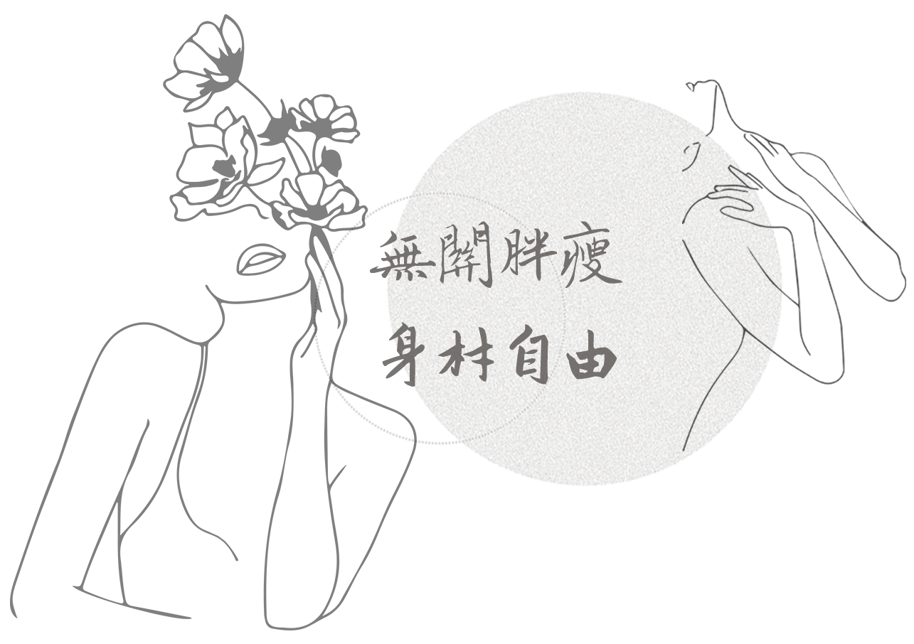

We share stories from people
who used to struggle with ED or
who are now suffering from it,
and from individuals or commu-
nities dedicating themselves to
enhancing the diversity of
social cognition on body image.